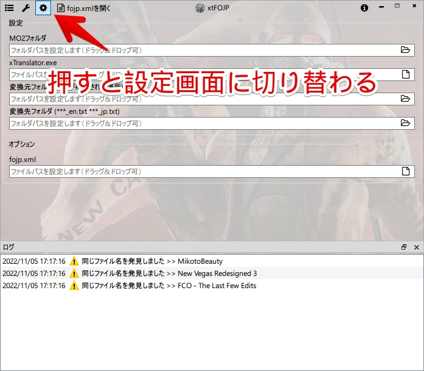
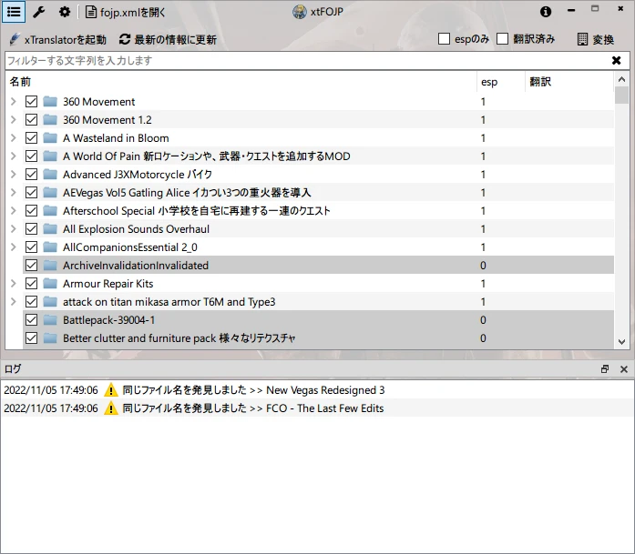
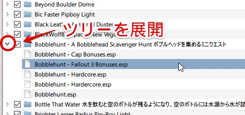
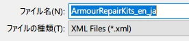
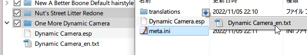

xtFOJP
xTranslatorでFOJPの日本語化をサポートするツール
※MO2で管理していることが前提となりますのでご注意ください
ダウンロード
64ビット版のみ
セットアップ
ツールを起動したらまずは設定をしてください

うまく認識できればMO2のmodsフォルダ内のものが表示されます

- 「同じファイル名を発見しました」が出る場合、xTranslatorでエクスポート時のファイル名を注意する必要があります
基本的な使い方
フォルダをダブルクリックするとxTranslatorが立ち上がります
プラグインが複数ある場合はツリーを展開して個別ファイルでダブルクリックします

xmlエクスポート時の注意する点として、プラグインのファイル名を含むようにしてください

（基本的にはデフォルトのままでOKですが、一部esmとespが同名である場合などは注意）
MCMな使い方
MODフォルダにtranslationsフォルダを用意して「なんとか_en.txt」とするとツリーに表示されます。 （プラグイン名_en.txtが推奨）

ダブルクリックでプラグインと同じように立ち上がります
xmlエクスポート時の注意する点はプラグインの時と同様プラグインのファイル名が含むようにしてください
出力して使う
- 「変換」を実行するとexeと同じ階層に「txt」フォルダを作り中間結果を出力します
- 全て変換が終わると設定で指定した「変換先フォルダ」に
xtFOJP_en.txtとxtFOJP_jp.txtという風にまとめて出力されます - fojp.xmlに読み込みの記述をします
例 <file jp="xtFOJP_jp.txt" en="xtFOJP_en.txt" />
注意点
- 自動で行う動作上プラグイン名に強く依存しています
- 同名のesm、espでない限り、基本的にファイル名はツールのデフォルトのままで手動では入力しないほうが事故らないです
既存の翻訳ファイルをxTranslatorで使えるようにする
- 翻訳したいファイルをxTranslatorで開く
- 一旦全て翻訳済みとしてxmlをエクスポートする
- FOJPインポート画面で翻訳ファイルをD&D
- インポートを実行する
これでxmlに取り込むことが出来ます。 一旦全て翻訳済みとしているので必要に応じて未翻訳部分を破棄してください。
未実装、作ってない部分
- MOD表示画面でフォルダ名にあるチェックボックスは特に何もありません
- FOJPインポート画面の共通翻訳テキストは機能していません